關於這份筆記
這份筆記是我在寫碩士論文（日治時期衛戍地諸部隊之空間規劃研究―以臺南永久兵營為例）期間，為了調閱土地資料、被地政人員打槍過好幾次後，從失敗中整理出來的精華。
最近發現其實好像很多人並不知道如何正確調閱到日治時期的土地資料，所以決定公開分享經驗，希望可以幫到有需要幫忙的人！
本份筆記是根據臺北市的土地資訊作為範例，我想應該適用於調閱大部分的縣市土地資料🤔 但如果大家在調閱過程中有遇到任何問題，也歡迎一起討論～（我在調閱臺南土地資料初期，也遇到很多一開始調不到資料，但後來發現問題後又順利調取資料的情形）
該走哪一條路？
調閱日治時期地籍資料前，先確認你手上有什麼資訊。
無論走哪條路，最後都會在 Step 3 匯流到同一份「地籍謄本及相關資料申請書」，再到 Step 4 跑地政事務所領件。
路徑 A · 從日治時期地號出發
1將日治時期地籍轉換為光復後的地籍
① 確定「町」轉換後的「段名」
戰後地政重新劃段時，段名通常會直接沿用町名，但若町名本身具日本色彩（如：明治、大正、旭、兒玉…），就會被改掉變得完全不一樣（例如可能改成「中正段」之類）。所以遇到這種町名時，需要再進一步確認戰後 最一開始 的地段名稱 — 因為後來可能又被合併或重劃過好幾次，只有 最一開始 那次劃段才對得回日治時期的町。
幸段其他臺北市町名請查文末「附錄對照表」。
② 至內政部新舊地號查詢系統
- 進入 內政部新舊地號查詢系統，點選「臺北市」進入臺北市地政局新舊地號查詢系統。
- 選擇「土地」，在「搜尋段小段」欄位輸入：
幸段。
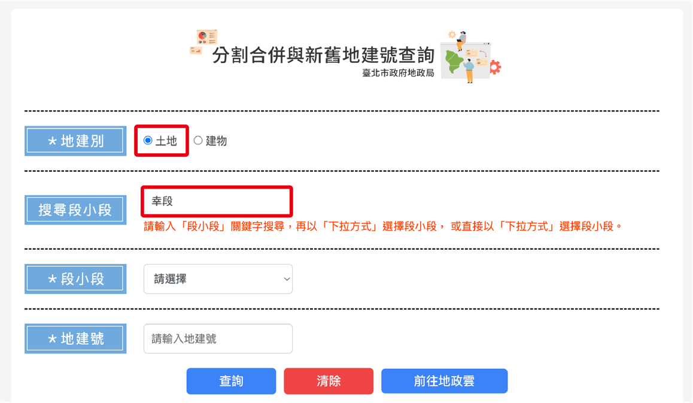
- 在段小段下拉中選擇正確的段小段名：
幸段（本案例的「幸町」沒有「丁目」，所以選沒有小段的「幸段」即可。如果你的町有「幾丁目」，請改選對應的「幾小段」）。
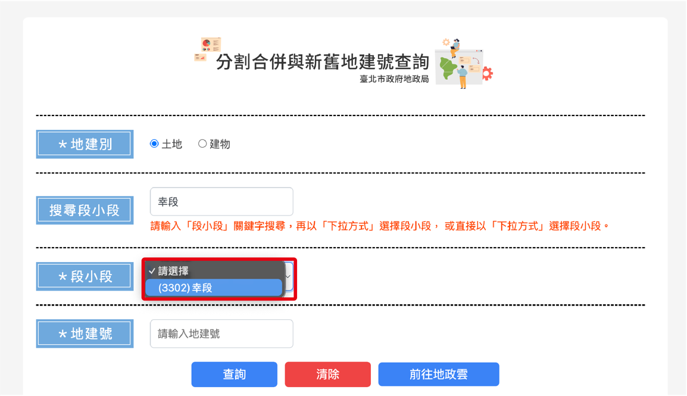
- 輸入地號
147-54，按「查詢」。
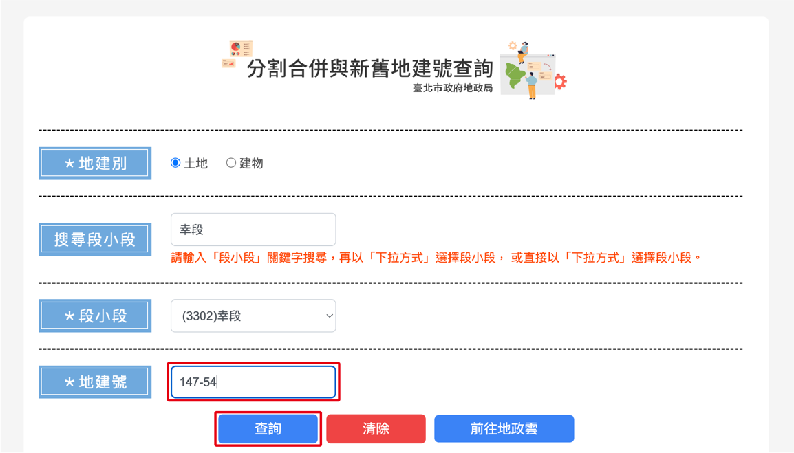
- 點選「新舊地建號」分頁，下方欄位即出現新舊地建號對照 — 除了舊地號以外，新地號也一併記下來（見 Step 2 後的備註）。
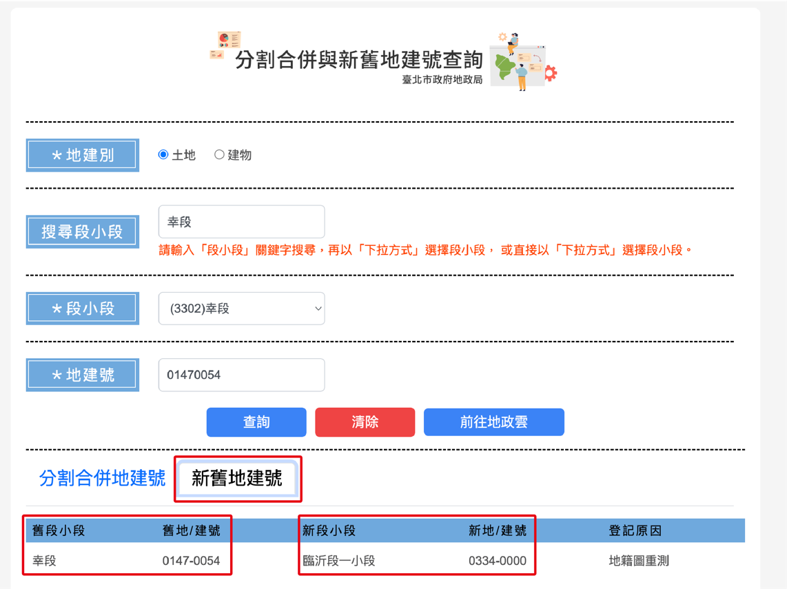
新地號臨沂段一小段 0334-0000
2查詢地籍所在的行政區域
申請書要填現在的行政區，所以用上一步取得的新地段名「臨沂段一小段」查現代行政區。
- 進入 國土測繪圖資服務雲
- 在搜尋欄位輸入「臨沂段」
- 得到行政區域：
中正區（這就是後面填申請書要用的「鄉鎮市區」）
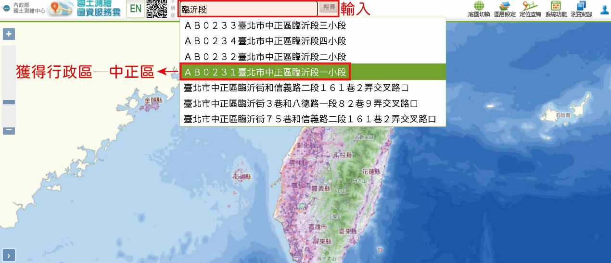
1網站查無資料 ≠ 真的調不到
有些地號在網站上查不到，但實際到地政事務所卻能調得到資料 — 即使網站查詢失敗，還是值得跑現場試試看。
舉例假設你查「幸段 147-54」時網站顯示「無此筆地號資料」，還是可以拿這筆地號到地政事務所試申請，仍有機會調到。
2同時記新地號當備援
有些地政人員不熟悉舊地號的查詢流程（這兩個系統好像不太一樣，對他們程序比較繁瑣），所以可以記下新地號請他們幫忙試試看。
舉例當時我也有遇過舊地號查不到資料，但剛好遇到願意幫忙進一步轉換地號的地政人員，所以在我提供新地號之後就有順利調閱到資料。
3填寫「地籍謄本及相關資料申請書」
可至 「地籍謄本及相關資料申請書」下載頁面 取得表格，或現場到地政事務所索取。按照下方表格的填寫方式填寫：
- 項目選「六、其他」
- 底下欄位寫「日據時期登記簿」及「台帳」
- 鄉鎮市區
- 臺北市中正區
- 段
- 幸段
- 小段
- （空白：因本筆土地於日治時期無「幾丁目」，故無小段）
- 地號
- 147-54
- 申請份數
- 1
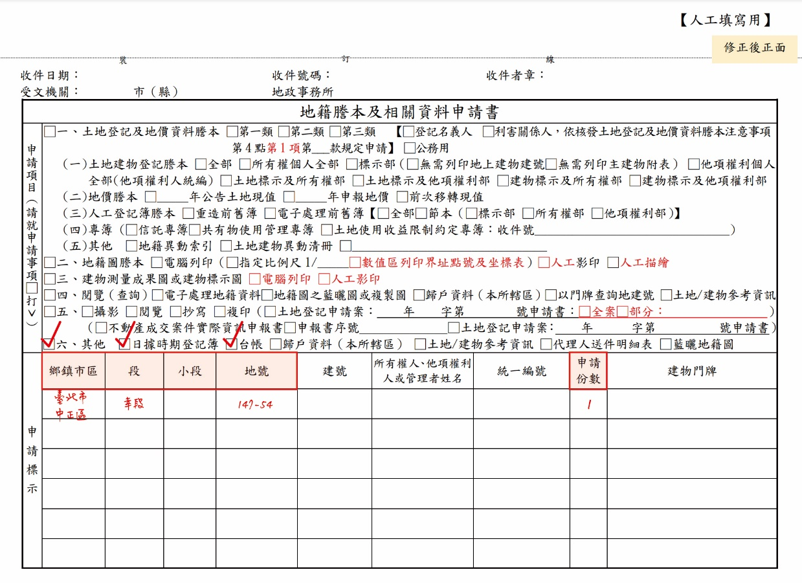
- 申請人
- 自己姓名
- 統一編號
- 身分證字號
- 申請用途
- 勾選「自行參考」
- 聯絡電話、住址
- 據實填寫
- 簽章、領件簽章
- 可以先簽好
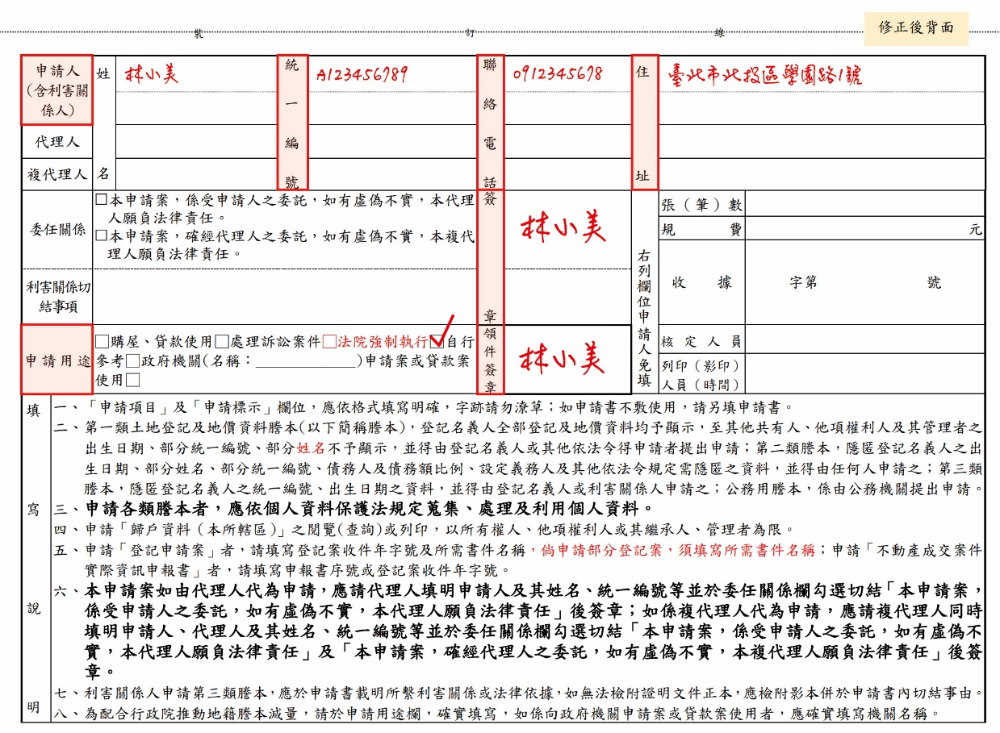
4到地政事務所申請謄本
!心理準備
因為土地可能陸續被切割過，舊地號也許都有變動或是並沒有登錄在系統之中，所以申請土地資料 不一定都能成功調閱到，但記得把網站查不到的也帶去現場試試看。
路徑 B · 從現代地址出發
1根據現代地址查詢現代地籍
- 進入 地籍圖資網路便民服務系統
- 選擇「門牌」分頁，輸入地址，點擊查詢
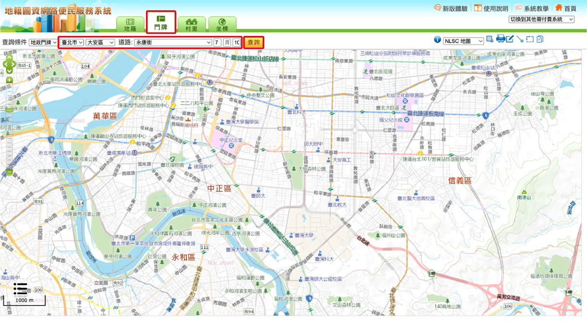
記下查詢到的現代地號：
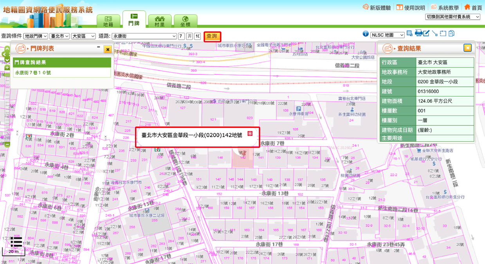
2將現在地號轉換成舊地號
流程跟路徑 A 第 1 步類似 — 進臺北市地政局新舊地號查詢系統，但這次是用「現代地段」反查「日治舊地段」。
- 選擇「土地」，在「搜尋段小段」欄位輸入：
金華段。 - 在段小段下拉中選「
金華段一小段」。
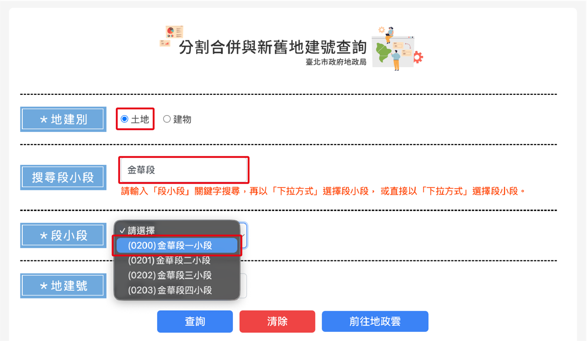
- 輸入地號
142，按「查詢」。
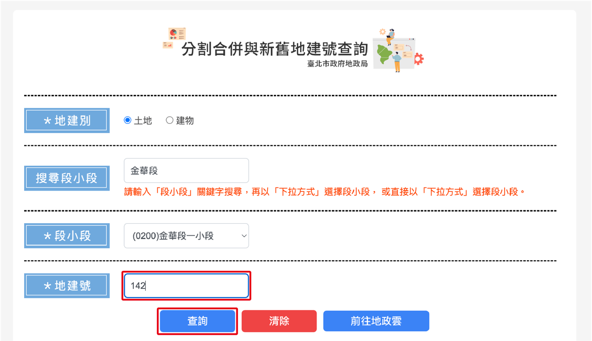
- 點選「新舊地建號」分頁，記下舊地號。
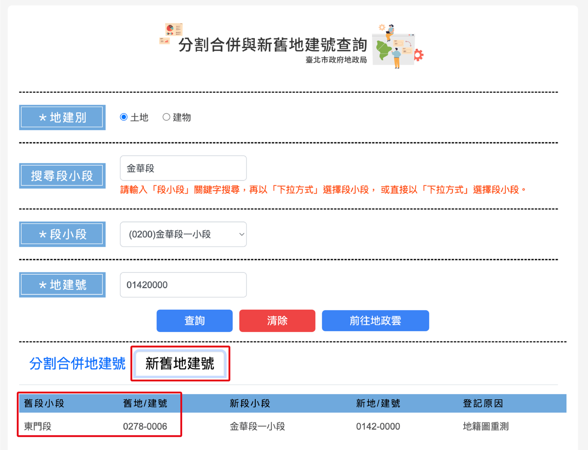
3填寫「地籍謄本及相關資料申請書」
同樣可至 「地籍謄本及相關資料申請書」下載頁面 取得表格。按照下方表格的填寫方式填寫，勾選方式同路徑 A：項目選「六、其他」，底下寫「日據時期登記簿」及「台帳」。
- 鄉鎮市區
- 臺北市大安區
- 段
- 東門段
- 小段
- （空白）
- 地號
- 0278-0006
- 申請份數
- 1
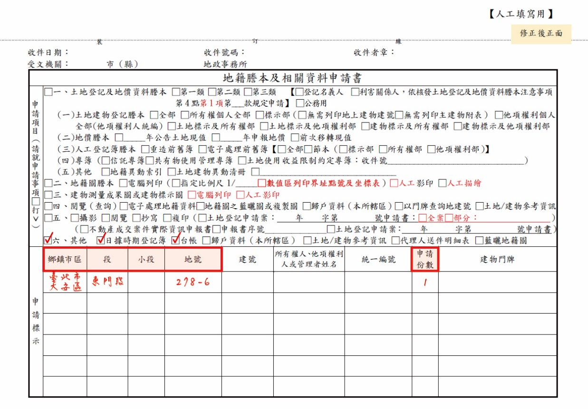
- 申請人
- 自己姓名
- 統一編號
- 身分證字號
- 申請用途
- 勾選「自行參考」
- 聯絡電話、住址、簽章
- 據實填寫
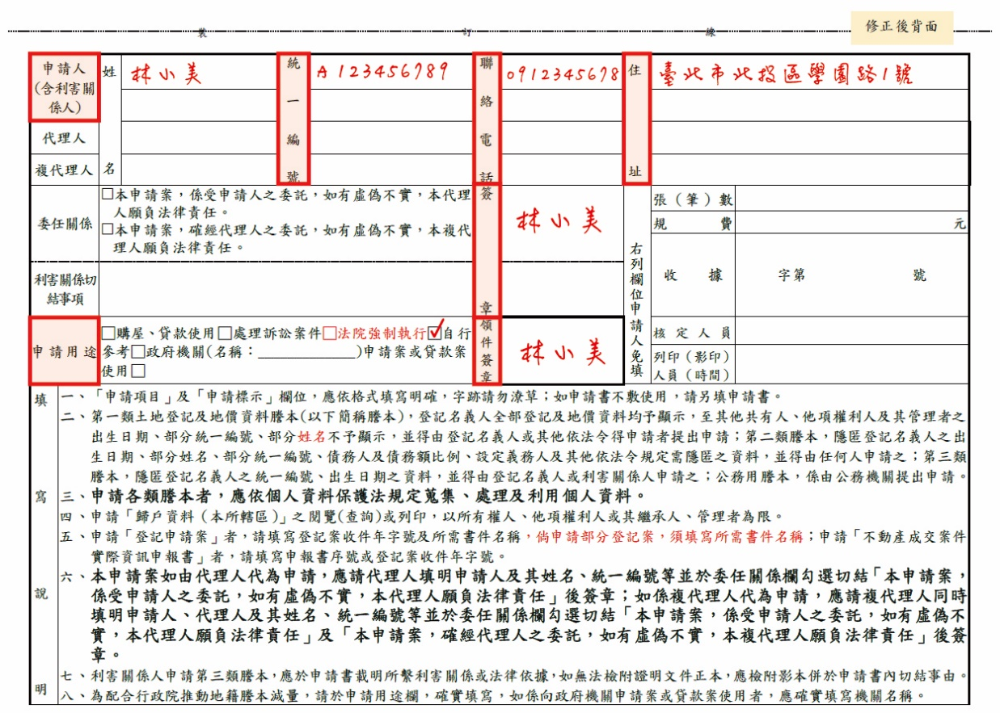
4到地政事務所申請謄本
同路徑 A，到地政事務所申請即可（注意事項可參考 路徑 A Step 4 的備註）。
備註總整理
1網站查無資料 ≠ 真的調不到
有些地號在網站上查不到資料，但實際到地政事務所卻調得到 — 即使網站查詢失敗，還是值得跑現場試試看。
2同時記新地號當備援
有些地政人員不熟悉用舊地號查詢的流程（這兩個系統好像不太一樣，對他們程序比較繁瑣），所以可以記下新地號請他們幫忙試試看。
!心理準備
因為土地可能陸續被切割、合併過，舊地號也許都有變動或並沒有登錄在系統之中，所以申請日治時期土地資料 不一定都能成功。但前置功課做齊，至少能把成功率拉到最高。
附錄｜臺北市町名／大字與段名對照表
戰後地政劃段時的對照清單，共 78 筆。點擊下方標題展開，可用搜尋框過濾。
展開對照表 （共 78 筆）
| 町名／大字 | 段名 | 類別 |
|---|---|---|
| 乃木町 | 小南門段 | 町 |
| 東園町 | 東園段 | 町 |
| 榮町 | 衡陽段 | 町 |
| 三橋町 | 三橋段 | 町 |
| 大和町 | 撫台段 | 町 |
| 建成町 | 建成段 | 町 |
| 京町 | 博愛段 | 町 |
| 上奎府町 | 上奎府段 | 町 |
| 本町 | 府前段 | 町 |
| 大龍峒町 | 大龍峒段 | 町 |
| 表町 | 館前段 | 町 |
| 太平町 | 太平段 | 町 |
| 明石町 | 府後段 | 町 |
| 永樂町 | 永樂段 | 町 |
| 築地町 | 築地段 | 町 |
| 港町 | 港段 | 町 |
| 西門町 | 西門段 | 町 |
| 下奎府町 | 下奎府段 | 町 |
| 壽町 | 壽段 | 町 |
| 日新町 | 日新段 | 町 |
| 新起町 | 新起段 | 町 |
| 大橋町 | 大橋段 | 町 |
| 新富町 | 新富段 | 町 |
| 泉町 | 泉段 | 町 |
| 八甲町 | 八甲段 | 町 |
| 河合町 | 河合段 | 町 |
| 樺山町 | 東橋段 | 町 |
| 佐久間町 | 建國段 | 町 |
| 旭町 | 營邊段 | 町 |
| 末廣町 | 城西段 | 町 |
| 錦町 | 錦安段 | 町 |
| 文武町 | 文武段 | 町 |
| 兒玉町 | 城南段 | 町 |
| 書院町 | 書院段 | 町 |
| 川端町 | 螢橋段 | 町 |
| 北門町 | 北門段 | 町 |
| 水道町 | 水源段 | 町 |
| 幸町 | 幸段 | 町 |
| 濱町 | 江濱段 | 町 |
| 東門町 | 東門段 | 町 |
| 元園町 | 原園段 | 町 |
| 福住町 | 福住段 | 町 |
| 若竹町 | 翠竹段 | 町 |
| 新榮町 | 新榮段 | 町 |
| 入船町 | 歡慈段 | 町 |
| 千歲町 | 千歲段 | 町 |
| 有明町 | 有明段 | 町 |
| 南門町 | 南門段 | 町 |
| 崛江町 | 石路段 | 町 |
| 龍口町 | 龍口段 | 町 |
| 馬場町 | 崁頂段 | 町 |
| 古亭町 | 古亭段 | 町 |
| 大正町 | 正大段 | 町 |
| 富田町 | 富田段 | 町 |
| 御成町 | 詔安段 | 町 |
| 蓬萊町 | 蓬萊段 | 町 |
| 宮前町 | 牛埔段 | 町 |
| 老松町 | 老松段 | 町 |
| 大宮町 | 劍潭段 | 町 |
| 圓山町 | 圓山段 | 町 |
| 龍山寺町 | 龍山寺段 | 町 |
| 松山 | 松山段 | 町 |
| 綠町 | 綠段 | 町 |
| 興雅 | 興雅段 | 町 |
| 柳町 | 柳段 | 町 |
| 大直 | 大直段 | 町 |
| 西園町 | 西園段 | 町 |
| 中庄 | 中庄段 | 町 |
| 十二甲 | 十二甲段 | 大安·大字 |
| 西新庄 | 西新庄段 | 大安·大字 |
| 坡心 | 坡心段 | 大安·大字 |
| 中崙 | 中崙段 | 大安·大字 |
| 龍安坡 | 龍安坡段 | 大安·大字 |
| 朱厝崙 | 朱厝崙段 | 大安·大字 |
| 下埤頭 | 下埤頭段 | 下埤頭·大字 |
| 六張犁 | 六張犁段 | 下埤頭·大字 |
| 東勢 | 東勢段 | 下埤頭·大字 |
| 下內埔 | 下內埔段 | 下埤頭·大字 |
| 中坡 | 中坡段 | 下埤頭·大字 |
| 上埤頭 | 上埤頭段 | 下埤頭·大字 |
| 五分埔 | 五分埔段 | 下埤頭·大字 |
| 上塔攸 | 上塔攸段 | 下埤頭·大字 |
| 三張犁 | 三張犁段 | 下埤頭·大字 |
| 下塔悠 | 下塔悠段 | 下埤頭·大字 |
| 頂東勢 | 頂東勢段 | 下埤頭·大字 |
| 舊里族 | 舊里族段 | 下埤頭·大字 |
資料來源：landagent.com.tw。其他縣市請查各地方政府地政局網站，或在內政部新舊地號查詢系統先試。
授權與引用
本文歡迎自由分享，引用時請標示作者及連結。
有問題或想補充？
這份筆記主要是根據我調閱臺南市土地的經驗整理（但以臺北市的土地為範例呈現）。如果你在其他縣市有調閱過、或發現流程有變動／我有寫錯的地方，歡迎來信告訴我，我會更新這份筆記。